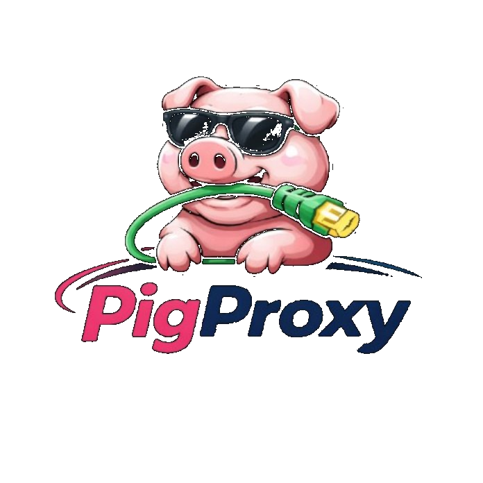

PigProxy
snout your way through the web
Built with open tools
What powers PigProxy
An open-source proxy core for routing and rewriting, plus a custom account layer, dashboard, and pig-branded UI.
AlloyProxy
Core proxy engine by Titanium Network, handling URL rewriting, WebSocket support, and the request flow behind the scenes.
PigProxy UI
Custom public-facing experience with account pages, dashboard shortcuts, safer messaging, and the pig-branded visual layer.
Open source. PigProxy is built on open tools and should always be used responsibly and within school or organization rules.